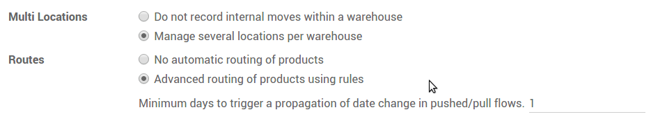
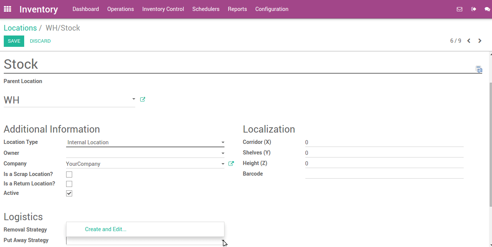

Overview
A good warehouse implementation takes care that products automatically move to their appropriate destination location. Putaway is the process of taking products off the receiving shipment and putting them into the most appropriate location.
If for instance a warehouse contains volatile substances, it is important to make sure that certain products are not stored close to each other because of a potential chemical reaction.
A putaway strategy follows the same principle as removal strategies but affects the destination location. Putaway strategies are defined at the location level (unlike removal strategies which are defined at the product level).
Configuration
Go to and check option Manage several location per warehouse & Advance routing of products using rules, then click on Apply.
Setting up a strategy
Let's take as an example a retail shop where we store vegetables and fruits.
We have to store this type of product in different locations to maintain product quality.
Suppose there is one warehouse location WH/Stock and there is sub location WH/Stock/Vegetables & WH/Stock/Fruits.
You can create a putaway strategy from . Open any location where you want to set a putaway strategy, click on Edit and locate the option Put Away Strategy.
Open the roll-down menu and click on Create and Edit. This will open a form view of put away strategy on which you have to set a name for the strategy, and set the method and fixed location for each category.

When you have entered all the necessary information, click on Save.
Now, when you purchase products with those categories, they will automatically be transferred to the correct location.
To check current inventory, Go to
There you can see current inventory by location.